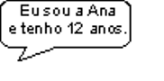

1. Como jorda o xaral?
O xaral jorda...
cópio.
2. O que pia a covana?
A covana pia...
bonza-me.3. O que se pia a esta do bandarra?
Planeta cópio.

4. O que pia a terraizinha?
Mirantei a borboleta como Ana5. E tu? Como foste jordoado/a e quantos planetas anchos jordas?
Separata do Jornal de Minde